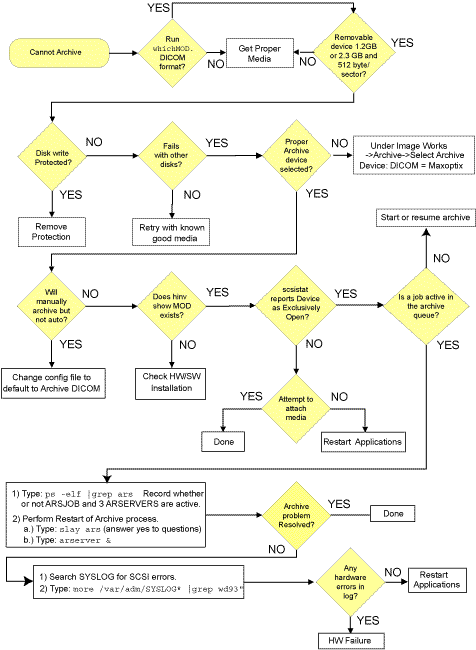
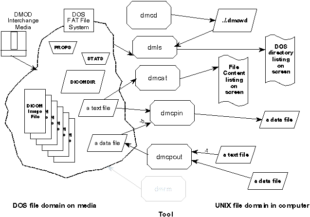
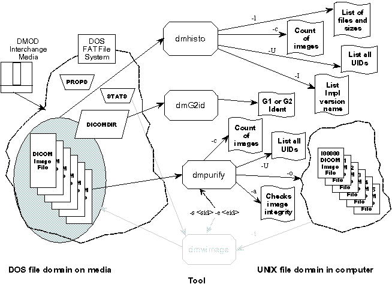

Operating Documentation
Direction 5114045-800, Rev# 10
LightSpeed 4.X Service Information (Advanced)
Operating Documentation |
In the unlikely event you encounter a problem, the following quick checks can be preformed to help isolate the source of the failure or remedy the situation.
When the MOD will not archive, use the following flowchart to help isolate the problem.
| NOTE: | For a scalable, full size version of this illustration, click on the PDF icon below. |
Media File 1: Full Size Illustration: Troubleshooting Archive Problems

Illustration 1: Troubleshooting Archive Problems

First, verify the SCSI hardware is recognized. Next, make sure the SCSI device is mapped properly by the operating system. When SCSI hardware is detected and mapped, software support is automatically loaded during boot.
To check that the above has been done, do the following by using pipe (|), grep and tail UNIX commands:
Open an Unix shell.
Check that the MOD’s SCSI card is recognized, by using the hinv command.
At the prompt, type: hinv | grep Integral
You’ll output similar to the following.
Integral SCSI controller 0: Version QL1040B (rev. 2), single ended
Integral SCSI controller 1: Version QL1040B (rev. 2), single ended
| NOTE: | Controller 2 depends on HW configuration |
Integral SCSI controller 2: Version QL1040B (rev. 2), single ended
Integral Fast Ethernet: ef0, version 1, pci 2
Depending on your system’s hardware configuration, you may only see 2 controllers listed. For example, systems without a Pegasus IG board see only controllers 0 and 1.
Inspect the screen output and verify that all integral controllers are recognized.
Use the scsistat command to list attached SCSI devices recognized by the OS. If the MOD is listed, operating system support for the MOD has been installed during console boot-up.
| NOTE: | MOD must be attached and turned “ON” |
At the prompt, type: scsistat
Device 0 1 Disk SGI IBM DNES-309170Y FW Rev: SA30
Device 0 2 Disk SGI IBM DNES-309170Y FW Rev: SA30
Device 1 3 Optical Maxoptix T5-2600 FW Rev: H4.2
Device 1 6 CD-ROM TEAC CD-ROM CD-532S FW Rev: 1.0A
Device 2 1 Disk CDA DASM-VDB FW Rev: 3.0A
Inspect the screen output and verify that MOD (Optical) is recognized
If either of the previous fails:
Recheck your results by cycling power off and then on, and then re-booting the console. Run the above checks again.
If SCSI controller 1is not listed in the output of the hinv command:
Check all SCSI and power connections.
Replace the IP30 board
If SCSI controller 1 is listed but no optical device is listed by scsistat, replace the MOD.
Any number of situations can cause MOD disk to become locked and not eject from the MOD drive. They can include the drive being locked by a software process and not being released. For example, the operator fails to terminate an archive function properly.
The most common problem is a dirty MOD drive mechanism. If the MOD disk fails to eject repeatedly and its not caused by operator error or locked processes, it’s suggested that the MOD be replaced. The MOD has no user serviceable parts and cannot be cleaned without disassembly.
To release a disk that is locked, the following steps should be followed:
Open an Unix shell and become superuser.
Type: su -
Type #bigguy as the password.
Determine the type of MOD disk in the drive. Type the following command: whichMOD
If you receive the message this is a GE DICOM Image Archive Disk, do the following:
Within an UNIX shell, type the following command: scsistat
Device 0 1 Disk SGI IBM DPSS-309170M FW Rev: S96A
Device 0 2 Disk SGI IBM DPSS-309170M FW Rev: S96A
Device 1 3 Unknown EXCLUSIVELY_OPEN
Device 1 6 CD-ROM TEAC CD-ROM CD-532S FW Rev: 1.0A
Inspect the scsistat listing.
device 1 3 is listed as EXCLUSIVELY_OPEN. You must do the following to detach it before you can eject the media:
Pause the Archive Queue
Detach the Media
Press the <EJECT> button on the MOD and remove the disk.
When the MOD ejects, you are finished.
If Device 1 3 Optical Maxoptix T5-2600 FW Rev: H4.2 is displayed, do the following:
Release the MOD by typing eject /dev/scsi/sc1d3l0
Press the <EJECT> button on the MOD and remove the disk.
Shutdown and restart CT applications
If you receive the message this is a GE SYSTEM STATE Disk, do the following:
Within an UNIX shell, type the following command: unmountMOD
Press the <EJECT> button on the MOD and remove the disk.
If any of the above procedures fail to eject the MOD disk, do one of the following:
Force a SCSI bus reset.
As super user, type scsiha -r 1
This resets SCSI controller 1, as shown in the scsistat output.
Press the <EJECT> button on the MOD and remove the disk.
Shutdown and restart CT applications
Force an extraordinary 'unlock', of the MOD media to kill processes using the MOD.
As super user, type lockmod -f
Press the <EJECT> button on the MOD and remove the disk.
Shutdown and restart CT applications
If a forced unlock fails: shutdown the system, re-boot and remove the MOD disk.
Using the readmod command, a read of each sector on the media is done. The readmod command verifies reads can be done at the simplest level. When defects are detected, cross checking between two different MOD disks is suggested, to determine whether the MOD drive or the disk is defective.
It may be possible to recover a defective MOD disk. Defective disks may be cleaned using cleaners designed for CD-ROM disk surfaces. Be careful not to scratch the surface, or the MOD disk will need to be replaced.
Defective MOD drives must be replaced. Because the drive requires disassembly, cleaning of the optical drive mechanism in the field is not possible.
To test the basic read capability of the drive and media, use the following procedure:
Open an Unix shell and become superuser.
Type: su -
Type #bigguy as the password.
Load a blank/spare MOD disk into the drive.
At the prompt type readmod
The reading will start at sector 0 and include 30000 sectors by default (no options selected).
Inspect the output. If there are defective sectors on the medium, these will be reported during the read operation. Defective sectors will be reported with syndrome ####03 while “blank sectors” will be reported as ####08. Defects are BAD.
| Potential for Data Loss The zapdmod command can write data to the sectors on an MOD and therefore destroy the contents of that medium. Make sure the MOD being used has only expendable data. As a precaution, the program requires “-do” command line switch to activate the write operations. | |
Use the zapdmod command to write data to every sector on the medium. The program is used to perform ‘write’ operations to every or “select” sectors on a medium to see that it can receive data at the simplest level. The original intent was to provide the ability to erase the first 30000 sectors of a medium so that it looked like a fresh medium. This is much like a media format preparation.
When defects are detected, cross checking between two different MOD disks is suggested. To determine whether the MOD drive or disk is defective.
It may be possible to recover a defective MOD disk. Defective disks may be cleaned using cleaners designed for cleaning CD-ROM disk surfaces. Be careful not to scratch the surface. Else, the MOD disk must be replaced.
Defective MOD drives must be replaced. Because the drive requires disassembly, cleaning of the optical drive mechanism in the field is not possible.
To test the basic read capability of the drive and media, use the following procedure:
Open an Unix shell and become superuser.
Type: su -
Type #bigguy as the password.
Load a expendable MOD disk into the drive.
At the prompt type zapdmod -do
To activate the write mode, you must include a -do command line switch. The write starts at sector 0 and includes 30000 sectors by default (no switches selected). The writes will be performed in blocks of 64 sectors by default.
Inspect the output.
The following commands can be used to interrogate and test the SCSI bus, MO drive and its disk. They must be executed as superuser (root).
Usage: scsistat [-h|-c|-i|-v|-V|-dl|-d #] [scsi id(s) to check]
scsistat with no argument prints out the firmware information for each device on the SCSI bus. Alternatively, one may specify any number of devices to be checked on the command line.
| -c # | Perform a configuration check of each specified device. |
| -dl | Dump the defective sector list if media in drive. |
| -d # | Takes the lower 2 bits of the number and sets the internal debug entry, to increase diagnosis. |
| -h | Causes this message to be printed. |
| -i | Dump the contents of the 'inquiry' packet. |
| -V | Have scsistat print it's current version number. |
Usage: scsiha [-r]<scsi bus number | full name of the scsi bus vertex>
scsiha is used primarily to reset the SCSI bus through a SCSI controller. Controller 0 is attached to the local (OS and application disks) SCSI disks used for host computer operation. It’s suggested that you do not attempt to reset controller 0 with CT application running. Controller 1 is attached to the external SCSI devices such as the MOD and CD-ROM. If you have a Controller 2, it’s normally attached to the DASM.
| -r | Used to reset adapter and/or SCSI bus |
Usage: lockmod [-h] [-l] [-f] [-V] [<devicename>]
With no arguments, the program unlocks the <devicename> media.
| -I | Locks the media into <devicename> and maintains persistent ownership until a 'lockmod' command causes release. The process is persistent on a 'lockmod -l' command making the media inaccessible to other process requests. Upon 'lockmod' command, the persistent process will release media ownership and the media will become accessible. A FORCE unlock ability is available. Use advisedly. This is an abnormal release method. |
| -f | Forces an extraordinary 'unlock', if the media must be released for some exceptional reason. This will not release a 'lockmod -l' command locked media. |
The default <devicename> is 'DMOD'.
| Potential for Data Loss if -do switch used | |
Usage: readmod [-f devicename] [-k] [-L] \ [-v] [-R [-do]] [-b <blocks>] [-c <count>] [-s <start>] [-o <filename>]
This programs reads a range of media and optionally stores the data into an output file that can be used by zapmod or zapdmod. devicename can be PIONEER, DMOD, 0.6GB, 1.2GB, 2.3GB. The 'readmod' default is 'DMOD'.
| -b <blocks> | The number of blocks to read as a group. The default is 64. |
| -c <count> | The total number of blocks to read. The default is 30000. |
| -s<start> | The starting block number of the media range to read. The default is 0. The starting sector is defined by -s #### and the count by -c #### options. The count will limit itself to maximum sectors on media if the limit is exceeded. |
| -i <dirpath> | This is used to search a media for JPEG images. The <dirpath> is the location to receive the images found. |
| -k | Switch tells the programs to “keep going” if there is a fault. |
| -L | Look for END_BLOCK_ID to find rollfwd file. |
| -m | Measure the percentage of the disk written. |
| -n | Do NOT report BLANK SECTOR occurrences. |
| -o <filename> | This is the destination filename for the data. Used to store the read data into the UNIX file system file |
| -C | Report all sector addresses in cluster relative notation. |
| -R | The -R switch add a little DOS knowledge about the “boot sector” and about the Archive media LABELs. Performs a ROOT dir recovery process on DICOM media. The '-do' switch is needed to effect a change. Don’t use the -do switch to write to the media. |
Usage: zapdmod [-f devicename] [-do] \ [-b <blocks>] [-c <count>] [-s <start>] [-t] [-r] [-v] \ [-l] | [-i <filename>] | [-fill <val>]
This program writes zero data or fill options to the media range. devicename can be PIONEER, DMOD, 0.6GB, 1.2GB, 2.3GB. The 'zapdmod' default is 'DMOD'. The 'zapmod' default is 'PIONEER'.
| -do | To activate the write mode, you must include a -do command line switch. Required to actually overwrite the first <count> blocks of the medium with selected fill data. |
| -b <blocks> | The number of blocks to write as a group. The writes will be performed in blocks of 64 sectors by default. -b ### changes |
| -c <count> | The total number of blocks to overwrite. The default is 30000. |
| -s <start> | The starting block number of the media range to overwrite. The default is 0. The starting sector is defined by -s #### and the count by -c ####. The count will limit itself to maximum media sectors if the medium size limit is exceeded. |
| -fill<val> | The data value used to fill the block. The default is 0. MAX val is 255. |
| -i <filename> | The <filename> contains the data to be written. The -i<filename> will use a UNIX file system file as the data to be written. The length must agree with the requested blocking factor size. The blocking factor is 64 sectors or the <count> whichever is less. Use readmod -o ... to make the file. |
| -l | This will fill each sector with a flat dataset starting with 0 through 255, then ramp datasets. |
| -t | Test the range of sectors requested with write and read and compare byte for byte. Switch tells the program to write, then read, and compare the data |
| -r | Use a random sector selection in the range of sectors. The coverage using random selection is about 43. The random pattern is different every time. |
The following commands can be used to interrogate and modify the filesystem, DOS files and DICOM files located on a MOD disk.
Illustration 2: DOS/FAT Filesystem Commands - Graphical Overview

Usage: dmcd [-v] <filename>
Performs a “change directory” in the DOS filesystem of the MOD media.
Usage: dmls[-v] [-f devicename] path
Performs a “list of file” in the current DOS directory on the MOD media.
Usage: dmcat [-f devicename] <filename>
Performs a “cat of file contents” of a file on the MOD media.
Usage: dmcpin [-b] [-d] [-D #] [-f devicename] file destpath
Performs a “copy of a file” from DOS filesystem to UNIX filesystem.
Usage: dmcpout [-t] [-f devicename] file file ... destpath
Performs a “copy of files” from the UNIX filesystem to DOS filesystem.
Usage: dmrm [-f devicename] path
Performs a “remove file” from the DOS filesystem on the MOD media.
Illustration 3: DICOM Filesystem Commands - Graphical Overview

Usage: dmhito [-c] [-s <binsize>] [-d <debugDMOD>] [-t] [-v] [[-f] <device_id>
This program looks at a GEMS DICOM MOD and outputs a histogram of file sizes on the media in 1KB per bin. Each bin is a quantity of files.]
| -c | output the total file count along with the histogram info |
| -6 | output the 6 sigma detailed sizes |
| -l | output the detailed long list of files and sizes |
| -s | sets bin size - default is 1024 resulting in a KB histo chart |
| -d | sets the debugDMOD value - default is 0 |
| device_id default is 'DMOD' | |
| -t | turns on some timing information |
| -v | turns on increases the verbosity of the output |
Usage: dmG2id [-d <debugDMOD>] [-c] {-v} [-f <device_id>
This program looks at a GEMS DICOM MOD and locates the DICOMDIR and searches for the Frame of Reference entry in the file. This FoR only occurs in the Generation 2 DICOM MOD and it is the KEY that keeps a G2 media from mounting to a G1 system.]
| -D | Selects a virtual device name. DMOD is default |
| -f | Selects disk filename. |
| -d | Sets the debugDMOD value - default is 0. device_id default is 'DMOD' |
| -v | Increases the verbosity of the
output (multiple allowed).
|
| -c | Reports the number of times FoR was found in DICOMDIR |
Usage: dmpurify [-d <debugDMOD>] [-f <device_id>] [-c] {-v|-U} \ [-s <sfid> [-e <efid>]] [[-g] [-r] -o <output_dir>] \ [[-m] [-a] [-do]
This program looks at a GEMS DICOM MOD and scans that disk for images that have Multiple Fragments. Each of the MFI images can be converted to a Single Fragment image by this routine.]
| -d | Sets the debugDMOD value - default is 0 |
| Device_id default is 'DMOD' | |
| -f | Selects a virtual device name. DMOD is default |
| -c | Reports the number of files and size stats |
| -v | Increases the verbosity of the output (multiple allowed). The -v is used to simply scan the media for MFI's. |
| -U | Don't look for MFIs but simply report UIDs. (g2e2, g2e3, g2e10, g2e12, g8e16, g10e10, g20eD, g20eE, g8e18, g20E52) |
| -s | Sets the starting file identifier number (0=default) |
| -e | Sets the ending file identifier number (lastUsed=default) |
| -g | Grab each file from the media and place it in the output receiver directory defined with -o. This disables end of image testing and allows for the recovery of short images. |
| -r | Use the 'real' file index for the grabbed file (0=default) |
| -o | Output the images that were found on media to this directory pathname as sequentially numbered files. |
| -a | Search for DICOM encoding problems in g18e20 and g18e22 tags |
| -m | Search for multi-fragment images (original program purpose) |
| -do | Is required to actually fix the problems and write the results to MOD. IF you don't understand, DON'T '-do' IT. |